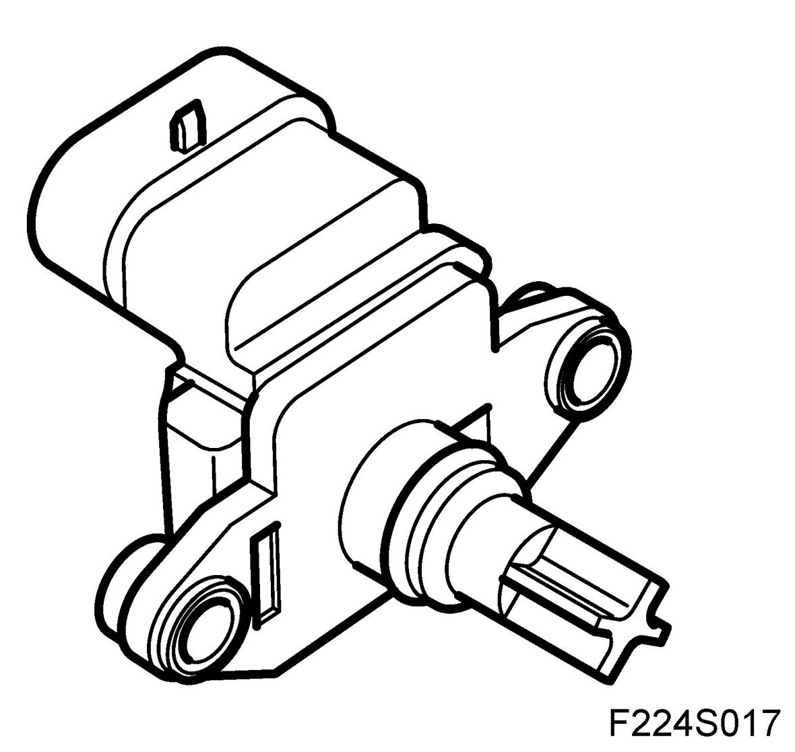
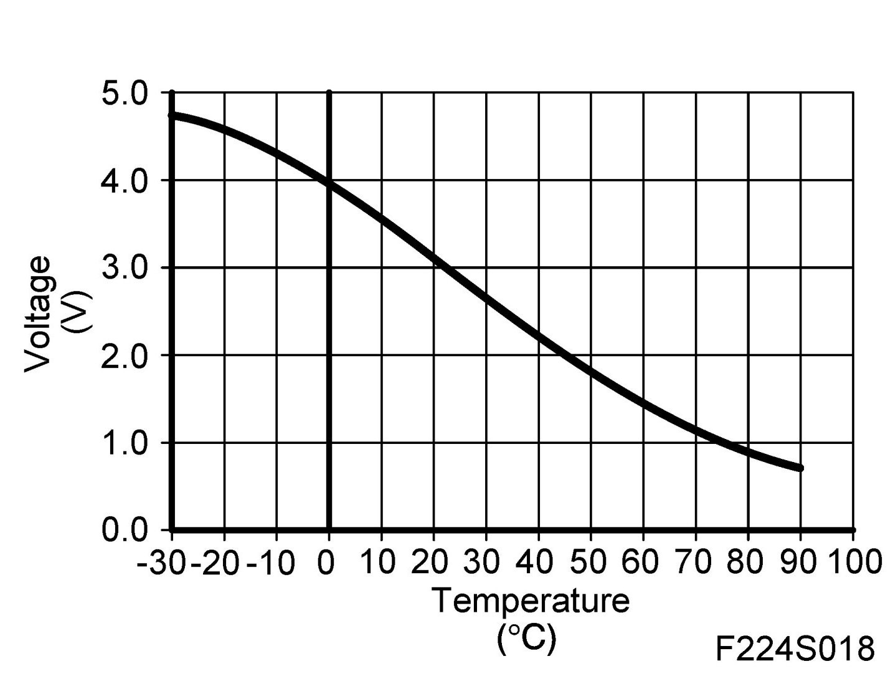
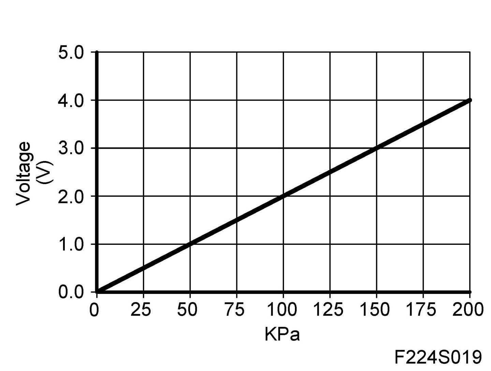
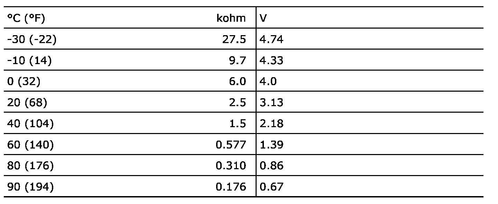
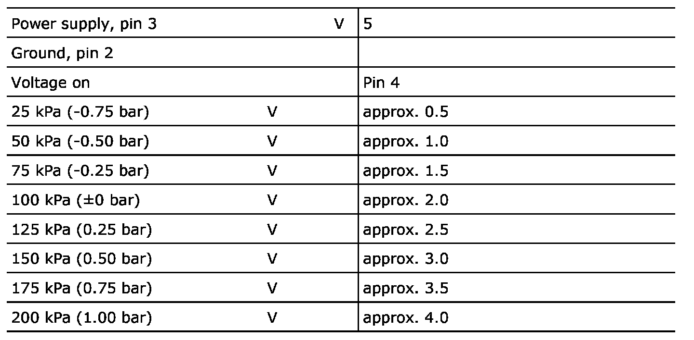

Air Temperature Sensor ( Ambient / Intake ): Specifications
Intake Air Sensor (688), T8



Temperature sensor

Power supply 5V through 2.74 kohm resistor in control module.
Absolute pressure sensor

Pressure given in kPa is absolute pressure, i.e. 100 kPa corresponds to atmospheric pressure at sea level.
When checking pressure sensor with pressure/vacuum pump, a somewhat lower voltage may be obtained when measuring at high altitudes.